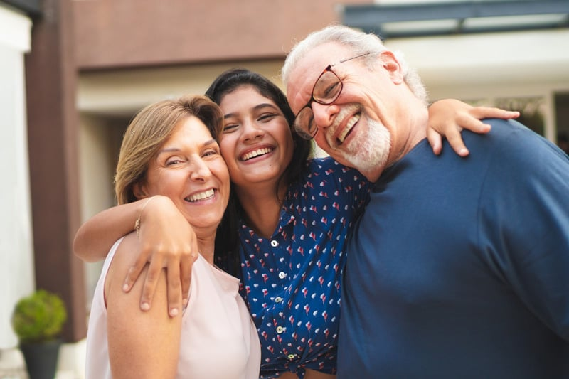
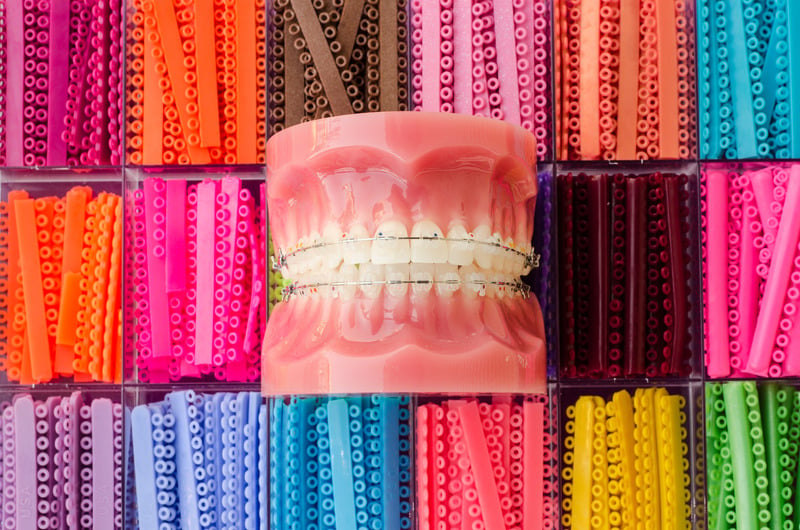
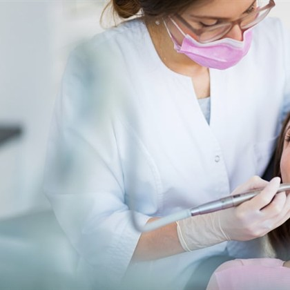
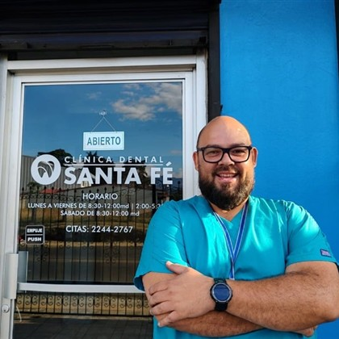
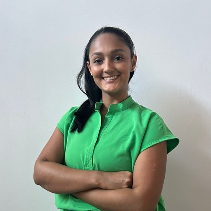
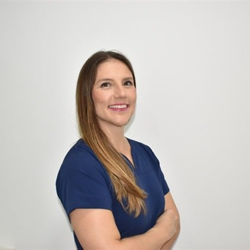
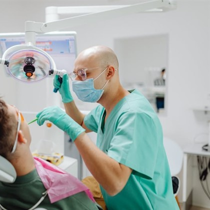
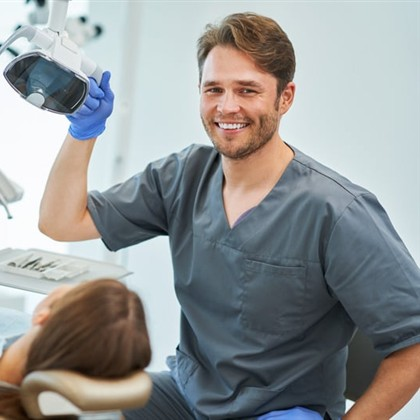

Diagnóstico
Valoración completa del estado de su salud bucal para definir el mejor plan de tratamiento.
En Clínica Dental Santa Fé ofrecemos diagnóstico, limpiezas, calzas, ortodoncia, tratamientos y más, con un equipo de última generación y profesionales con amplia experiencia.

Atención preventiva y restaurativa para mantener una sonrisa sana en cada etapa de la vida.
Valoración completa del estado de su salud bucal para definir el mejor plan de tratamiento.
Profilaxis profesional para eliminar placa y sarro, previniendo caries y enfermedad de las encías.
Restauraciones estéticas que reparan dientes afectados por caries y devuelven su función.
Soluciones duraderas para reconstruir o reemplazar piezas dentales dañadas o ausentes.
Rehabilitación oral personalizada para recuperar la sonrisa y la capacidad de masticar con comodidad.
Aclaramiento seguro y profesional para una sonrisa más brillante y luminosa.
Imágenes de alta precisión con menor exposición, para diagnósticos exactos y oportunos.
Cuéntenos su caso y le orientamos sobre el tratamiento ideal para usted.
ConsultarContamos con un equipo de especialistas para resolver casos que requieren atención avanzada.
Corrección de la posición de los dientes con ortodoncia convencional, estética y alineadores.
Ver catálogo →Tratamiento de conductos (nervios) para conservar piezas dentales con daño profundo.
Salud de las encías y colocación de implantes dentales para reemplazar piezas perdidas.
Extracciones y procedimientos quirúrgicos realizados con seguridad y precisión.
Diagnóstico y manejo de afecciones de los tejidos de la boca.
Soluciones fijas y de aspecto natural para devolver función y estética a su sonrisa.
Tratamientos de ortodoncia personalizados con tecnología digital. Todo comienza con una cita de valoración.

La profesional especialista realiza un análisis individual de cada caso y, junto con usted, define el tipo de tratamiento de ortodoncia a seguir. El proceso completo se desarrolla en 7 pasos.
Brackets metálicos, con o sin prima. La opción clásica y efectiva para alinear los dientes.
Brackets de aspecto discreto para un tratamiento más disimulado.
Preparación temprana para guiar el desarrollo y corregir antes del tratamiento principal.
Férulas transparentes y removibles. Certificación en Smartee e Invisalign.
Para ortodoncia convencional o alineadores, con planificación digital del caso.
Cada tratamiento se cotiza según tu caso particular. Solicita tu cita de valoración para conocer la mejor opción para ti.
Solicitar valoración¿Consultas? Ven a tu cita de valoración.
Agendar valoraciónUn equipo especialista con amplia trayectoria y actualización profesional constante.

Lic. en Odontología con más de 40 años de experiencia profesional.

Lic. en Odontología. Actualización profesional constante. Más de 15 años de experiencia en odontología general.

Lic. en Odontología. Posgrado en Ortodoncia y Ortopedia de los Maxilares. Certificación en Smartee e Invisalign.

Lic. en Odontología. Máster en Endodoncia. Más de 10 años de experiencia en tratamiento de nervios.

Lic. en Odontología. Máster en Patología y Cirugía Oral. Más de 15 años de experiencia en patología y cirugía oral.

Lic. en Odontología. Máster en Periodoncia. Más de 10 años de experiencia en colocación de implantes y procedimientos relacionados.
Agende su cita o escríbanos. Con gusto le orientamos sobre el tratamiento que necesita.